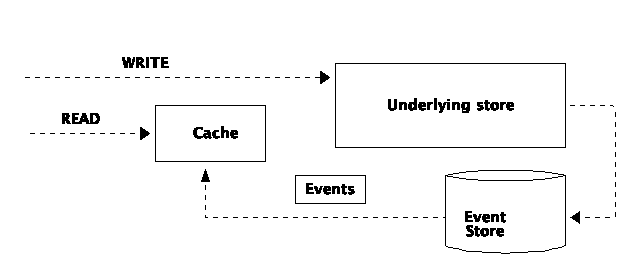

Choose the database
Izanami provide an integration with several databases :
- Level DB (by default)
- In memory
- Redis
- Cassandra
- Elastic search
It’s possible to choose one database for the whole Izanami instance or choose a database par datatype (for example Elasticsearch for A/B testing and Redis for all the rest)
Izanami can handle event with :
- An in memory store
- Redis with pub / sub
- Kafka
- Akka distributed pub / sub
The in memory event store does not work with a cluster of izanami instance.
Databases
In memory store
The in memory store all data in memory using an hashmap.
The in memory store should be used for trial purpose and is not suited for production usage.
bin/izanami -Dizanami.db.default=InMemory
Or
export IZANAMI_DATABASE=InMemory
bin/izanami
Level DB
Level DB is key / value store developed by google. The datas are stored on a the local file system.
Level DB store should be used for trial purpose and is not suited for production usage.
bin/izanami -Dizanami.db.default=LevelDB -D-Dizanami.db.leveldb.parentPath=/datas
Or
export IZANAMI_DATABASE=LevelDB
export LEVEL_DB_PARENT_PATH=/datas
bin/izanami
Redis
Redis is an very fast in memory data store.
To run Izanami with redis :
bin/izanami \
-Dizanami.db.default=Redis \
-D-Dizanami.db.redis.host=localhost \
-D-Dizanami.db.redis.port=6379 \
-D-Dizanami.db.redis.password=xxxx
Or
export IZANAMI_DATABASE=Redis
export REDIS_HOST=localhost
export REDIS_PORT=6379
export REDIS_PASSWORD=xxxx
bin/izanami
redis sentinel
bin/izanami \
-Dizanami.db.default=Redis \
-Dizanami.db.redis.type=sentinel \
-D-Dizanami.db.redis.host=localhost \
-Dizanami.db.redis.port=26379 \
-Dizanami.db.redis.masterId=redismaster \
-Dizanami.db.redis.sentinels.0.host=localhost \
-Dizanami.db.redis.sentinels.0.port=26380 \
-Dizanami.db.redis.password=xxxx
Or
export IZANAMI_DATABASE=Redis
export REDIS_HOST=localhost
export REDIS_PORT=26379
export REDIS_MASTER_ID=redismaster
export REDIS_PASSWORD=xxxx
bin/izanami
Other settings are available, consult the settings page.
Cassandra
Cassandra is an very scalable column data store. You can use this database if you need strong availability or if you have a huge amount of datas (for example A/B testing scenarios with a lot end users).
To run Izanami with cassandra :
bin/izanami \
-Dizanami.db.default=Cassandra \
-D-Dizanami.db.cassandra.host=localhost \
-D-Dizanami.db.cassandra.port=9042
Or
export IZANAMI_DATABASE=Cassandra
export CASSANDRA_HOST=localhost
export CASSANDRA_PORT=9042
bin/izanami
Other settings are available, consult the settings page.
Elasticsearch
Elasticsearch is an very scalable search engine. This database if well suited for storing A/B testing events.
To run Izanami with elasticsearch :
bin/izanami \
-Dizanami.db.default=Elastic \
-D-Dizanami.db.elastic.host=localhost \
-D-Dizanami.db.elastic.port=9200 \
-D-Dizanami.db.elastic.user=xxxx \
-D-Dizanami.db.elastic.password=xxxx
Or
export IZANAMI_DATABASE=Elastic
export ELASTIC_HOST=localhost
export ELASTIC_PORT=9200
export ELASTIC_USER=xxxx
export ELASTIC_PASSWORD=xxxx
bin/izanami
Other settings are available, consult the settings page.
Mongo
To run Izanami with mongo :
bin/izanami \
-Dizanami.db.default=Mongo \
-Dizanami.db.mongo.url=mongodb://localhost:27017/izanami
Or
export IZANAMI_DATABASE=Mongo
export MONGODB_ADDON_URI=mongodb://localhost:27017/izanami
bin/izanami
Other settings are available, consult the settings page.
AWS DynamoDB
To run Izanami with DynamoDB :
bin/izanami \
-Dizanami.db.default=Dynamo \
-Dizanami.db.dynamo.region=eu-west-1
-Dizanami.db.dynamo.accessKey=xxxxx
-Dizanami.db.dynamo.secretKey=xxxxx
Or
export IZANAMI_DATABASE=Dynamo
export DYNAMO_REGION=eu-west-1
export DYNAMO_ACCESS_KEY=xxxxxxx
export DYNAMO_SECRET_KEY=xxxxxxx
bin/izanami
If the credentials are not set in the configuration, connector will use the default credential provider chain provided by the DynamoDB Java SDK to retrieve credentials.
Izanami requires the following IAM permissions :
- dynamodb:DeleteItem
- dynamodb:GetItem
- dynamodb:PutItem
- dynamodb:Query
- dynamodb:UpdateItem
- dynamodb:BatchWriteItem
- dynamodb:DescribeTable
The table name required are izanami and izanami_experimentevents.
Additionally if the DynamoDB tables don’t already exist, Izanami will create them for you which will require the dynamodb:CreateTable permission.
You can create them with the following commands
aws dynamodb create-table --table-name izanami --attribute-definitions AttributeName=store,AttributeType=S AttributeName=id,AttributeType=S --key-schema AttributeName=store,KeyType=HASH AttributeName=id,KeyType=RANGE --provisioned-throughput ReadCapacityUnits=1,WriteCapacityUnits=1
aws dynamodb create-table --table-name izanami_experimentevents --attribute-definitions AttributeName=experimentId,AttributeType=S AttributeName=variantId,AttributeType=S --key-schema AttributeName=experimentId,KeyType=HASH AttributeName=variantId,KeyType=RANGE --provisioned-throughput ReadCapacityUnits=1,WriteCapacityUnits=1
Other settings are available, consult the settings page.
Postgresql
To run Izanami with Postgresql :
bin/izanami \
-Dizanami.db.default=Postgresql \
-Dizanami.db.postgresql.url="jdbc:postgresql://localhost:5432/izanami" \
-Dizanami.db.postgresql.username=izanami \
-Dizanami.db.postgresql.password=izanami \
-Dizanami.db.postgresql.connectionPoolSize=32
Or
export IZANAMI_DATABASE=Postgresql
export JDBC_DATABASE_URL=jdbc:postgresql://localhost:5432/izanami
export POSTGRESQL_USER=izanami
export POSTGRESQL_PASSWORD=izanami
export POSTGRESQL_CONNECTION_POOL_SIZE=32
bin/izanami
In Memory with Db
If your data fit in memory and you need high throughput you can use this store.
With this store your data are kept in memory and used for read operations. During write operations, the in memory image is updated asynchronously.

To run Izanami with in memory with db :
bin/izanami \
-Dizanami.db.default=InMemoryWithDb \
-Dizanami.db.inMemoryWithDb.db=Mongo \
-Dizanami.db.inMemoryWithDb.pollingInterval=1 second \ // If you need to force a periodic refresh of your cache
-Dizanami.db.mongo.url=mongodb://localhost:27017/izanami
Or
export IZANAMI_DATABASE=InMemoryWithDb
export IN_MEMORY_WITH_DB_DB=Mongo
export MONGODB_ADDON_URI=mongodb://localhost:27017/izanami
export IN_MEMORY_WITH_DB_POLLING_INTERVAL=1 second // If you need to force a periodic refresh of your cache
bin/izanami
You can set a database per domain :
bin/izanami \
-Dizanami.db.default=InMemoryWithDb \
-Dizanami.db.inMemoryWithDb.db=Mongo \
-Dizanami.db.inMemoryWithDb.pollingInterval=1 second \ // If you need to force a periodic refresh of your cache
-Dizanami.db.mongo.url=mongodb://localhost:27017/izanami \
-Dizanami.feature.db.conf.db.type=Elastic // Override underlying db for features
Mix Databases
If you want to use 2 or more databases you need to provide
- The connection settings for each DB
- The database associated to a domain
For example, use redis for all except the A/B testing events stored in ES :
bin/izanami \
-Dizanami.db.default=Redis \
-Dizanami.db.redis.host=localhost \
-Dizanami.db.redis.port=6379 \
-Dizanami.db.redis.password=xxxx \
-Dizanami.db.elastic.host=localhost \
-Dizanami.db.elastic.port=9200 \
-Dizanami.db.elastic.user=xxxx \
-Dizanami.db.elastic.password=xxxx \
-Dizanami.variantBinding.db.type=Elastic \
-Dizanami.experimentEvent.db.type=Elastic
Or
export IZANAMI_DATABASE=Redis
export REDIS_HOST=localhost
export REDIS_PORT=6379
export REDIS_PASSWORD=xxxx
export ELASTIC_HOST=localhost
export ELASTIC_PORT=9200
export ELASTIC_USER=xxxx
export ELASTIC_PASSWORD=xxxx
export EXPERIMENT_VARIANT_BINDING_DATABASE=Elastic
export EXPERIMENT_EVENT_DATABASE=Elastic
bin/izanami
Other settings are available, consult the settings page.
Event stores
The event store is essentially used for server sent event. Server sent event is used for real time server push notifications.
In memory
With this config, the events are emitted in memory using akka eventStream. This is the default configuration.
The memory event store should not be used in a clustered environment as the events are local to each node.
bin/izanami \
-Dizanami.events.store=InMemory
Or
export IZANAMI_EVENT_STORE=InMemory
bin/izanami
Redis pub sub
The redis event store use the redis pub / sub.
This event store could be useful if you run multiple instance of izanami and already use redis as database but this solution is not robust.
bin/izanami \
-Dizanami.events.store=Redis
-D-Dizanami.db.redis.host=localhost \
-D-Dizanami.db.redis.port=6379 \
-D-Dizanami.db.redis.password=xxxx
Or
export IZANAMI_EVENT_STORE=Redis
export REDIS_HOST=localhost
export REDIS_PORT=6379
export REDIS_PASSWORD=xxxx
bin/izanami
Other settings are available, consult the settings page.
Kafka
The Kafka event store is the recommended event store.
bin/izanami \
-Dizanami.events.store=Kafka
-D-Dizanami.db.kafka.host=localhost \
-D-Dizanami.db.kafka.port=9092 \
Or
export IZANAMI_EVENT_STORE=Kafka
export KAFKA_HOST=localhost
export KAFKA_PORT=6379
bin/izanami
Other settings are available, consult the settings page.
Distributed pub sub
The distributed pub / sub use akka distributed pub sub. To use this store you need to form a akka cluster between each nodes.
#Instance 1
bin/izanami \
-Dizanami.events.store=Distributed \
-Dcluster.akka.remote.netty.tcp.port=2551 \
-Dcluster.akka.remote.seed-nodes.0=akka.tcp://DistributedEvent@127.0.0.1:2551
#Instance 2
bin/izanami \
-Dhttp.port=9001 \
-Dizanami.events.store=Distributed \
-Dcluster.akka.remote.netty.tcp.port=2552 \
-Dcluster.akka.remote.seed-nodes.0=akka.tcp://DistributedEvent@127.0.0.1:2551
Or
#Instance 1
export IZANAMI_EVENT_STORE=Distributed
export AKKA_CLUSTER_PORT=2551
export AKKA_CLUSTER_SEED_NODE_HOST=127.0.0.1
export AKKA_CLUSTER_SEED_NODE_PORT=2551
bin/izanami
#Instance 2
export HTTP_PORT=9001
export IZANAMI_EVENT_STORE=Distributed
export AKKA_CLUSTER_PORT=2552
export AKKA_CLUSTER_SEED_NODE_HOST=127.0.0.1
export AKKA_CLUSTER_SEED_NODE_PORT=2551
bin/izanami
Other settings are available, consult the settings page.